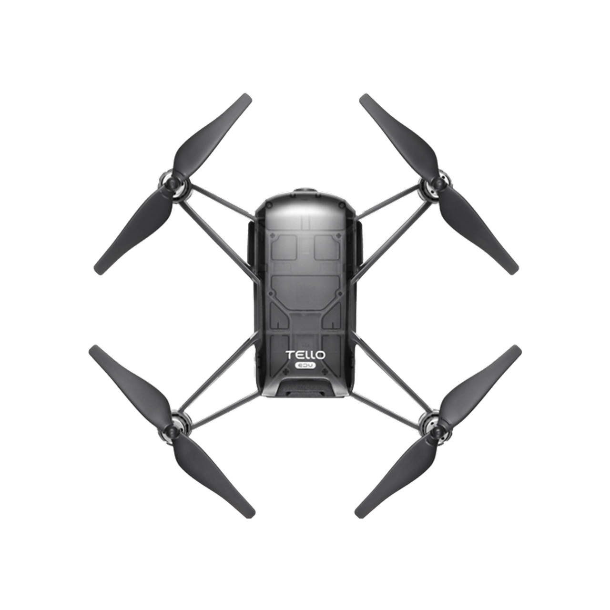
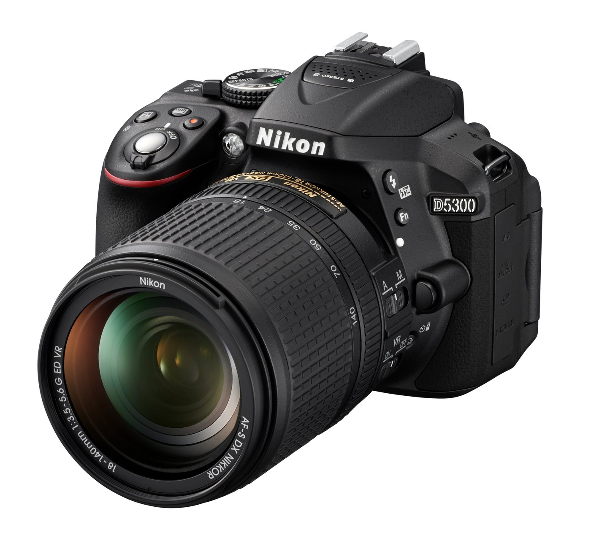
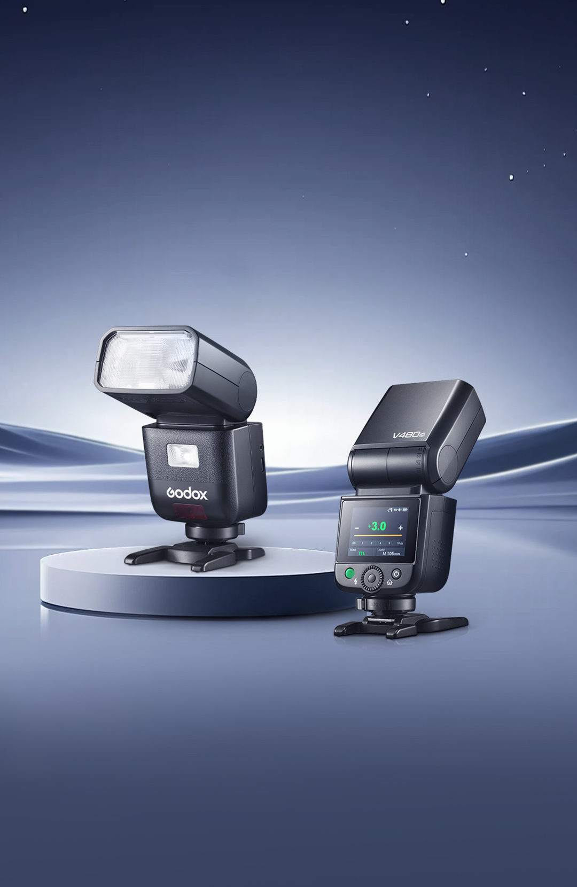

PROJECT / 01
Lunar Vow Archive
將角色、攻略同圖片整理成三語檔案庫，練習分類、導覽同內容組織。
HTML、CSS、JavaScript、GitHub Pages、三語介面
開啟原站遊戲插畫版權屬 miHoYo／HoYoverse；網站為個人非官方項目閱讀項目記錄
我想令不同類型嘅遊戲資料更易搵，所以用分頁、分類同搜尋整理內容。呢個作品集亦沿用咗原站嘅檔案庫視覺語言。
由網頁到 STEM，再到鏡頭後面
將角色、攻略同圖片整理成三語檔案庫，練習分類、導覽同內容組織。
HTML、CSS、JavaScript、GitHub Pages、三語介面
開啟原站遊戲插畫版權屬 miHoYo／HoYoverse；網站為個人非官方項目我想令不同類型嘅遊戲資料更易搵，所以用分頁、分類同搜尋整理內容。呢個作品集亦沿用咗原站嘅檔案庫視覺語言。

探索用可組裝、可編程嘅小型無人機，令 STEM 學習更具體。
STEM、無人機概念、學習流程、項目簡報
Tello EDU 官方圖片 · Aerovate 概念參考，並非本人持有嘅無人機概念包括 DIY 套件、組裝活動同入門程式工作坊。重點係將硬件、教學同操作體驗放埋一齊思考；目前作為學生教育概念展示。
AEROVATE / 四旋翼概念參考
揀用 Ryze Tello EDU 作可編程四旋翼無人機示例，研究程式指令、飛行控制同任務設計。呢部係概念參考，並非我持有或自行完成嘅 Aerovate 原型。
最長飛行時間屬廠方規格，實際時間會受飛行環境同使用方式影響。

用 Nikon D5300 練習構圖、光線同角色故事感。
Nikon D5300、Godox V480N、構圖、光線、自然修圖
Nikon 官方產品圖片；圖中鏡頭只作示意我留意角色視線、服裝同道具嘅完整，修圖以自然比例同合適色調為方向。呢頁以 Nikon D5300 同 Godox V480 系列官方圖片介紹器材；圖片並非本人拍攝作品。
我嘅攝影器材 / 相機
用 D5300 練習構圖、光線同角色故事；以下整理機身嘅主要規格。

我嘅攝影器材 / 閃光燈
Nikon 版本嘅鋰電機頂閃光燈，配備觸控螢幕、可轉動燈頭同 Godox X 無線系統。
D5300 嘅閃光同步快門為 1/200 秒或更慢；器材配搭以機身支援功能為準。
試下其他關鍵字，或者清除篩選